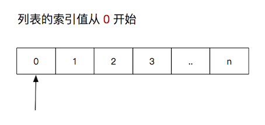

<!DOCTYPE lake>
<h2 data-lake-id="TTJfQ" data-lake-index-type="2" id="TTJfQ"><span data-lake-id="u17170866" id="u17170866">高级数据类型</span></h2><p data-lake-id="uf147ee6b" id="uf147ee6b"><span data-lake-id="ucd1d8d4a" id="ucd1d8d4a">Python中的数据类型可以分为：数字型（基本数据类型）和非数字型（高级数据类型）</span></p><ul list="u94b5687e"><li data-lake-id="u2279b951" fid="u90e9f297" id="u2279b951"><span data-lake-id="u7aec075a" id="u7aec075a">数字型包含：整型</span><code data-lake-id="u4df88b3c" id="u4df88b3c"><span data-lake-id="ua1b4907c" id="ua1b4907c">int</span></code><span data-lake-id="ue62a80a3" id="ue62a80a3">、浮点型</span><code data-lake-id="u4f4bb216" id="u4f4bb216"><span data-lake-id="u0593b384" id="u0593b384">float</span></code><span data-lake-id="uf79e5dd9" id="uf79e5dd9">、布尔型</span><code data-lake-id="ue45e982c" id="ue45e982c"><span data-lake-id="u06a75d93" id="u06a75d93">bool</span></code><span data-lake-id="u3a07dc52" id="u3a07dc52">、复数型</span><code data-lake-id="u0dfd8670" id="u0dfd8670"><span data-lake-id="u432a193a" id="u432a193a">complex</span></code></li><li data-lake-id="u9fd2de25" fid="u90e9f297" id="u9fd2de25"><span data-lake-id="u9a429739" id="u9a429739">非数字型包含：字符串</span><code data-lake-id="u57984cf2" id="u57984cf2"><span data-lake-id="ue3593daf" id="ue3593daf">str</span></code><span data-lake-id="u57bf2b63" id="u57bf2b63">、列表</span><code data-lake-id="uc3a93bb3" id="uc3a93bb3"><span data-lake-id="u97fc836d" id="u97fc836d">list</span></code><span data-lake-id="ua131f811" id="ua131f811">、元组</span><code data-lake-id="ud2157b57" id="ud2157b57"><span data-lake-id="ud63c7556" id="ud63c7556">tuple</span></code><span data-lake-id="u4f20f17b" id="u4f20f17b">、集合</span><code data-lake-id="ud59cbbf0" id="ud59cbbf0"><span data-lake-id="u128b1fc8" id="u128b1fc8">set</span></code><span data-lake-id="ud77d14cf" id="ud77d14cf">、字典</span><code data-lake-id="ubd1d77fa" id="ubd1d77fa"><span data-lake-id="u7764542c" id="u7764542c">dict</span></code></li></ul><p data-lake-id="u9244a3bf" id="u9244a3bf"><br/></p><p data-lake-id="ue81daf91" id="ue81daf91"><strong><span data-lake-id="u18c9c166" id="u18c9c166">高级数据类型的特点</span></strong><span data-lake-id="uddbfe6dd" id="uddbfe6dd">​</span></p><ul list="u1657990b"><li data-lake-id="u9fc7dee7" fid="ue55dc9f1" id="u9fc7dee7"><span data-lake-id="u696074e8" id="u696074e8">都是一个序列 sequence，也可以理解为 容器</span></li><li data-lake-id="u38a302be" fid="ue55dc9f1" id="u38a302be"><span data-lake-id="u0d80ae21" id="u0d80ae21">获取某一个元素 </span><code data-lake-id="u82167dff" id="u82167dff"><span data-lake-id="ub73f6f1e" id="ub73f6f1e">数据集[index]</span></code><span data-lake-id="ubd7fb739" id="ubd7fb739"> (集合除外,无序的)</span></li><li data-lake-id="ua8508ce1" fid="ue55dc9f1" id="ua8508ce1"><span data-lake-id="u39b6a50d" id="u39b6a50d">通过</span><code data-lake-id="u50d8c0b6" id="u50d8c0b6"><span data-lake-id="ua3011b45" id="ua3011b45">for</span></code><span data-lake-id="u2ff0a2b5" id="u2ff0a2b5">循环遍历</span></li><li data-lake-id="u37748205" fid="ue55dc9f1" id="u37748205"><span data-lake-id="ud6d48caf" id="ud6d48caf">都可以计算长度、最大/最小值、比较、删除</span></li><li data-lake-id="u5c7c5661" fid="ue55dc9f1" id="u5c7c5661"><span data-lake-id="u22ee6394" id="u22ee6394">连接 + 和 重复 *</span></li><li data-lake-id="u4755d216" fid="ue55dc9f1" id="u4755d216"><span data-lake-id="u2eeac083" id="u2eeac083">切片，获取容器一部分</span></li></ul><h2 data-lake-id="xKYwK" data-lake-index-type="2" id="xKYwK"><span data-lake-id="u9fcb176f" id="u9fcb176f">列表</span></h2><p data-lake-id="u9deaddc6" id="u9deaddc6"><span data-lake-id="u144f5bb0" id="u144f5bb0">列表 是 Python 中使用 最频繁 的数据类型，专门用于存储 一串 数据，存储的数据 称为 </span><strong><span data-lake-id="ubadee399" id="ubadee399">元素</span></strong><span data-lake-id="ufb9db42a" id="ufb9db42a"><br/></span><span data-lake-id="u7d3a0b06" id="u7d3a0b06">列表的类型是：</span><strong><span data-lake-id="uc4aa7ca9" id="uc4aa7ca9">list</span></strong></p><h3 data-lake-id="LzJhe" data-lake-index-type="2" id="LzJhe"><span data-lake-id="u2a557fb6" id="u2a557fb6">列表的定义</span></h3><p data-lake-id="ua19a5964" id="ua19a5964"><span data-lake-id="u6eb69b76" id="u6eb69b76">列表用</span><code data-lake-id="u855caca6" id="u855caca6"><span data-lake-id="u8b8fc151" id="u8b8fc151">[]</span></code><span data-lake-id="u7c024373" id="u7c024373">定义,元素之间用逗号</span><code data-lake-id="u6a9acc82" id="u6a9acc82"><span data-lake-id="u9463581e" id="u9463581e">,</span></code><span data-lake-id="uec5cc260" id="uec5cc260">分隔</span></p><span class="yuque-card-unsupported">[codeblock]</span><h3 data-lake-id="OD7VW" data-lake-index-type="2" id="OD7VW"><span data-lake-id="u2d527b55" id="u2d527b55">访问列表的元素</span></h3><p data-lake-id="ueb0c6f06" id="ueb0c6f06"><span data-lake-id="u53693932" id="u53693932">查找列表中元素是按照列表索引进行查找的。索引 就是元素在 列表 中的位置编号，又可以被称为 </span><strong><span data-lake-id="u3eb686e4" id="u3eb686e4">下标</span></strong><span data-lake-id="u4bcdfb67" id="u4bcdfb67"><br/>索引是从0开始的，例如：第一个元素，索引就为0</span></p><p data-lake-id="ua438fc29" id="ua438fc29"></p><span class="yuque-card-unsupported">[codeblock]</span><h3 data-lake-id="bog7j" data-lake-index-type="2" id="bog7j"><span data-lake-id="uf7f8d1f8" id="uf7f8d1f8">遍历列表</span></h3><p data-lake-id="u28461590" id="u28461590"><span data-lake-id="u3dc1ef61" id="u3dc1ef61">可以通过for遍历列表中的元素</span></p><span class="yuque-card-unsupported">[codeblock]</span><h3 data-lake-id="AQ14B" data-lake-index-type="2" id="AQ14B"><span data-lake-id="u17e0017c" id="u17e0017c">列表的操作</span></h3><p data-lake-id="u1465de86" id="u1465de86"><span data-lake-id="u45fbd0e8" id="u45fbd0e8">列表可以增加新的元素，删除元素，修改元素。还可以对列表进行排序等操作</span></p><p data-lake-id="uce657087" id="uce657087"><strong><span data-lake-id="u08a803ca" id="u08a803ca">​</span></strong><br/></p><p data-lake-id="uc0828290" id="uc0828290"><strong><span data-lake-id="u02089ed8" id="u02089ed8">增加元素</span></strong></p><p data-lake-id="u08e4e7f0" id="u08e4e7f0"><span data-lake-id="u1a9c20c2" id="u1a9c20c2">通过</span><code data-lake-id="u722c2c84" id="u722c2c84"><span data-lake-id="u3accd1e6" id="u3accd1e6">append</span></code><span data-lake-id="ua0265824" id="ua0265824">增加新元素</span></p><span class="yuque-card-unsupported">[codeblock]</span><p data-lake-id="u3194807c" id="u3194807c"><span data-lake-id="u56f1028f" id="u56f1028f">结果:</span></p><span class="yuque-card-unsupported">[codeblock]</span><p data-lake-id="u141b0aca" id="u141b0aca"><strong><span data-lake-id="ue9c68e6d" id="ue9c68e6d">删除元素</span></strong></p><p data-lake-id="u9eaebfe5" id="u9eaebfe5"><span data-lake-id="u68deb157" id="u68deb157">通过</span><code data-lake-id="u11624620" id="u11624620"><span data-lake-id="ub2ae57a7" id="ub2ae57a7">pop</span></code><span data-lake-id="u2c20d676" id="u2c20d676">删除指定</span><strong><span data-lake-id="u8873cb92" id="u8873cb92">索引</span></strong><span data-lake-id="u01ababf7" id="u01ababf7">元素</span></p><span class="yuque-card-unsupported">[codeblock]</span><p data-lake-id="u2d2e482f" id="u2d2e482f"><strong><span data-lake-id="u23b047f3" id="u23b047f3">​</span></strong><br/></p><p data-lake-id="ub40bb1ad" id="ub40bb1ad"><span data-lake-id="u099b142d" id="u099b142d">通过</span><code data-lake-id="u2eec7059" id="u2eec7059"><span data-lake-id="ud2a06469" id="ud2a06469">remove</span></code><span data-lake-id="u7267f609" id="u7267f609">方法删除指定</span><strong><span data-lake-id="uaefc9a70" id="uaefc9a70">内容</span></strong><span data-lake-id="ub7bf1be4" id="ub7bf1be4">元素</span></p><span class="yuque-card-unsupported">[codeblock]</span><p data-lake-id="udd8615ed" id="udd8615ed"><span data-lake-id="u688a0718" id="u688a0718">结果:</span></p><span class="yuque-card-unsupported">[codeblock]</span><p data-lake-id="u302286a3" id="u302286a3"><strong><span data-lake-id="u48b10b8d" id="u48b10b8d">修改元素</span></strong></p><p data-lake-id="u5fc27527" id="u5fc27527"><span data-lake-id="ua1a7a4bc" id="ua1a7a4bc">通过 </span><code data-lake-id="uef12a3dd" id="uef12a3dd"><span data-lake-id="uc26c90f4" id="uc26c90f4">列表[索引]=新数据</span></code><span data-lake-id="u4f8dbf53" id="u4f8dbf53"> 修改元素</span></p><span class="yuque-card-unsupported">[codeblock]</span><p data-lake-id="ubc5acb5c" id="ubc5acb5c"><span data-lake-id="u3f6f720c" id="u3f6f720c">结果:</span></p><span class="yuque-card-unsupported">[codeblock]</span><p data-lake-id="u5046694f" id="u5046694f"><strong><span data-lake-id="u07b4e6eb" id="u07b4e6eb">查询</span></strong></p><p data-lake-id="u3fe29178" id="u3fe29178"><span data-lake-id="ubbb53e87" id="ubbb53e87">通过 </span><code data-lake-id="u02200c99" id="u02200c99"><span data-lake-id="u1019f159" id="u1019f159">列表[索引]</span></code><span data-lake-id="uf27c8882" id="uf27c8882"> 获取元素</span></p><span class="yuque-card-unsupported">[codeblock]</span><p data-lake-id="u2e3fcb0c" id="u2e3fcb0c"><span data-lake-id="u9a9bb727" id="u9a9bb727">结果:</span></p><span class="yuque-card-unsupported">[codeblock]</span><p data-lake-id="udb5c2f01" id="udb5c2f01"><span data-lake-id="u87cd8850" id="u87cd8850">通过 </span><code data-lake-id="ue8cf2549" id="ue8cf2549"><span data-lake-id="u643c50fc" id="u643c50fc">列表.index(元素)</span></code><span data-lake-id="uc62793bf" id="uc62793bf"> 查找元素的索引</span></p><span class="yuque-card-unsupported">[codeblock]</span><p data-lake-id="u1de11cc5" id="u1de11cc5"><span data-lake-id="ucb9088c2" id="ucb9088c2">结果:</span></p><span class="yuque-card-unsupported">[codeblock]</span><h3 data-lake-id="ERVax" data-lake-index-type="2" id="ERVax"><span data-lake-id="u1ea07135" id="u1ea07135">列表的排序</span></h3><p data-lake-id="u880dda1c" id="u880dda1c"><span data-lake-id="u9354103e" id="u9354103e">通过 </span><code data-lake-id="u6aa1fede" id="u6aa1fede"><span data-lake-id="u9639816d" id="u9639816d">列表.sort()</span></code><span data-lake-id="uf61c8f07" id="uf61c8f07"> 对列表进行升序排序</span></p><span class="yuque-card-unsupported">[codeblock]</span><p data-lake-id="ub7f5b8a2" id="ub7f5b8a2"><span data-lake-id="u8325ceff" id="u8325ceff">结果:</span></p><span class="yuque-card-unsupported">[codeblock]</span><p data-lake-id="u2d0196f3" id="u2d0196f3"><span data-lake-id="uf64ef014" id="uf64ef014">通过 </span><code data-lake-id="u4cfe9524" id="u4cfe9524"><span data-lake-id="ucd15922e" id="ucd15922e">列表.sort(reverse=True)</span></code><span data-lake-id="u8091d3d6" id="u8091d3d6"> 对列表进行降序排序</span></p><span class="yuque-card-unsupported">[codeblock]</span><p data-lake-id="ud5084680" id="ud5084680"><span data-lake-id="u74a6fb88" id="u74a6fb88">结果:</span></p><span class="yuque-card-unsupported">[codeblock]</span><p data-lake-id="u2a1a6d82" id="u2a1a6d82"><span data-lake-id="u7faf208b" id="u7faf208b">通过 </span><code data-lake-id="uf436b4b9" id="uf436b4b9"><span data-lake-id="u62d5149e" id="u62d5149e">列表.reverse()</span></code><span data-lake-id="u4a7aa1f9" id="u4a7aa1f9"> 对列表进行反转</span></p><span class="yuque-card-unsupported">[codeblock]</span><p data-lake-id="u3ccb0b6c" id="u3ccb0b6c"><span data-lake-id="uca4547ee" id="uca4547ee">结果:</span></p><span class="yuque-card-unsupported">[codeblock]</span><h3 data-lake-id="xgPvN" data-lake-index-type="2" id="xgPvN"><span data-lake-id="u53b741fc" id="u53b741fc">列表的嵌套</span></h3><p data-lake-id="u7a332b65" id="u7a332b65"><span data-lake-id="u9f0caa82" id="u9f0caa82">列表中的元素可以是列表类型的数据，就称为列表的嵌套</span></p><p data-lake-id="u098c2b4f" id="u098c2b4f"><span data-lake-id="ufed6a66f" id="ufed6a66f">嵌套列表的定义：</span></p><span class="yuque-card-unsupported">[codeblock]</span><p data-lake-id="u09bd1e59" id="u09bd1e59"><span data-lake-id="u22e2ffa3" id="u22e2ffa3">查询元素</span></p><span class="yuque-card-unsupported">[codeblock]</span><p data-lake-id="u62ba7b73" id="u62ba7b73"><span data-lake-id="u6c8c12d2" id="u6c8c12d2">修改元素</span></p><span class="yuque-card-unsupported">[codeblock]</span><p data-lake-id="uad3f2b00" id="uad3f2b00"><br/></p><h2 data-lake-id="Bu80O" data-lake-index-type="2" id="Bu80O"><span data-lake-id="uf90daa89" id="uf90daa89">练习-办公室分配</span></h2><p data-lake-id="u502edbb8" id="u502edbb8"><br/></p><p data-lake-id="udd97ef8c" id="udd97ef8c"><strong><span data-lake-id="u9ab99bab" id="u9ab99bab">需求</span></strong></p><p data-lake-id="u15d8ede3" id="u15d8ede3"><span data-lake-id="uc713a735" id="uc713a735">一个学校，有3个办公室，现在有8位老师等待工位的分配</span></p><p data-lake-id="ud9a4f1ab" id="ud9a4f1ab"><code data-lake-id="u4b480197" id="u4b480197"><span data-lake-id="u01130750" id="u01130750">['袁腾飞', '罗永浩', '俞敏洪', '李永乐', '王芳芳', '马云', '李彦宏', '马化腾']</span></code></p><p data-lake-id="ue31f18d6" id="ue31f18d6"><span data-lake-id="u189779a1" id="u189779a1">​</span><br/></p><p data-lake-id="u32d47b19" id="u32d47b19"><span data-lake-id="uc6fd9cfd" id="uc6fd9cfd">请编写程序:</span></p><ol list="u53fa299c"><li data-lake-id="u0acb8781" fid="u951e3d51" id="u0acb8781"><span data-lake-id="ub5c35456" id="ub5c35456">完成随机的分配</span></li><li data-lake-id="ud64c48b7" fid="u951e3d51" id="ud64c48b7"><span data-comment-id="34162845" data-lake-id="u232feedb" id="u232feedb">打印办公室信息 (每个办公室中的人数，及分别是谁)</span></li></ol><p data-lake-id="uf7d5aa52" id="uf7d5aa52"><br/></p><p data-lake-id="ua080ac44" id="ua080ac44"><strong><span data-lake-id="u51c88c11" id="u51c88c11">分析</span></strong></p><span class="yuque-card-unsupported">[codeblock]</span><details class="lake-collapse" data-lake-id="u7c1c76a4" id="u7c1c76a4" open="false"><summary class="lake-summary" data-lake-id="u7af8a063" id="u7af8a063"><span data-lake-id="ufe334674" id="ufe334674">提示：获取随机数</span></summary><span class="yuque-card-unsupported">[codeblock]</span></details><p data-lake-id="u1c8daad8" id="u1c8daad8"><strong><span data-lake-id="u17f057bd" id="u17f057bd">​</span></strong><br/></p><p data-lake-id="u257e8338" id="u257e8338"><strong><span data-lake-id="uef524d97" id="uef524d97">实现</span></strong></p><span class="yuque-card-unsupported">[codeblock]</span>